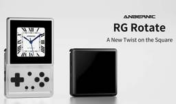
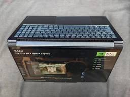
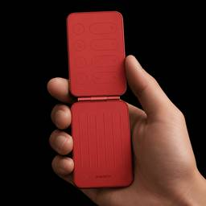

デイリーガジェット
https://daily-gadget.net/
デイリーガジェットは、スマホや海外発のユニークなガジェット、クラウドファンディングの注目アイテムまで幅広くレビュー。生活をもっと楽しく快適にする視点で、日常に驚きと便利さを届けるガジェット情報メディアです。
フィード

【AliExpress】「Anbernic RG Rotate」がセールで約1.4万円！画面が回るギミック搭載
デイリーガジェット
9月1日0時からAliExpressで超大型セール「秋の先取りセール」が開催されています !! AliExpressにて、最新フラッグシップモデル「Anbernic RG Rotate」が大幅割引されるセールを実施してい...投稿 【AliExpress】「Anbernic RG Rotate」がセールで約1.4万円！画面が回るギミック搭載 は デイリーガジェット に最初に表示されました。関連記事:【AliExpress】「ANBERNIC RG Rotate」がセールで1.6万円台！画面が回るギミック搭載携帯ゲーム機のAnbernic公式ストアで新春セール！最新機種まで全体安く携帯ゲーム機のAnbernic公式ストアで独身の日セール！最安値が多数
4時間前
20キー・2ホイール・ジョイスティック搭載の左手デバイス「KOVERAL X20」がKickstarterに登場！3方式接続と8色展開が特徴
デイリーガジェット
米コロラド州デンバー発のプロジェクトとして、KAVEROは9月3日、クリエイター向けコントロールコンソール「KOVERAL X20」のクラウドファンディングをKickstarterで開始しました。 20個のプログラマブル...投稿 20キー・2ホイール・ジョイスティック搭載の左手デバイス「KOVERAL X20」がKickstarterに登場！3方式接続と8色展開が特徴 は デイリーガジェット に最初に表示されました。関連記事:TRETTITREのモジュール式プレーヤー、レコード・CD・カセット3台セットが399ドルで登場！あなたの壁がレコード棚になる8.8インチの着脱式タッチ画面付きキーボード「Kwynex K1」が約5.5万円で登場！あなたのデスクからサブモニターが消える？Blackviewから20日スタンバイで有機EL搭載の3,200円爆安ウォッチ登場！【Blackview X20】
6時間前

Lenovoが「Yoga 9n 2-in-1」を発表！NVIDIA製チップ「RTX Spark」と99.9Wh大容量バッテリー搭載の16型有機ELノート
デイリーガジェット
Lenovoは、ドイツ・ベルリンで開催されるIFA 2026に合わせ、コンバーチブル型ノートPC「Yoga 9n 2-in-1」を発表しました。 NVIDIAのArmベースSoC「RTX Spark」を搭載する16型の有...投稿 Lenovoが「Yoga 9n 2-in-1」を発表！NVIDIA製チップ「RTX Spark」と99.9Wh大容量バッテリー搭載の16型有機ELノート は デイリーガジェット に最初に表示されました。関連記事:Lenovo「Yoga Tab Gen 2」発表！11.1型では数少ない4K・144Hz画面に1万1000mAhバッテリーを搭載したタブレットNvidia N1X搭載「Lenovo Yoga Pro 9n」リーク！20コアと最大128GBメモリでM5 Maxの対抗馬となるかLenovoから「Yoga Tab」が発表！Snapdragon 8 Gen 3搭載で11.1インチ・144Hzディスプレイ搭載の高性能タブレット
7時間前
「Steam Frame」発売はもう目前か！Valveがパッケージ情報を数か月ぶりに更新、Steam Machineでは6日後に予約開始の前例あり
デイリーガジェット
ValveのVRヘッドセット「Steam Frame」に、発売が近いことを示す新たな動きが確認されました。 データマイナーのBrad Lynch氏によると、Steamのバックエンドで同製品のパッケージ情報が数か月ぶりに更...投稿 「Steam Frame」発売はもう目前か！Valveがパッケージ情報を数か月ぶりに更新、Steam Machineでは6日後に予約開始の前例あり は デイリーガジェット に最初に表示されました。関連記事:Valveの新型VR『Steam Frame』発売目前か！Steamに専用カテゴリ『Great on Steam Frame』登場。Valve「Steam Frame」発売準備が最終段階か。無線アダプターのドライバーが「Released」に変更、今夏発売へ前進EmuDeck開発元のミニPC『Playnix』$1,139で発売、RX 9060 XT搭載でSteam Machine待ちに応える一台
8時間前
Xiaomi「POCO X8 Power」が海外で発売！10,000mAhバッテリーと高圧洗浄に耐えるIP69K準拠
デイリーガジェット
Xiaomi傘下のPOCOは9月4日、10,000mAhバッテリーを搭載したミッドレンジスマートフォン「POCO X8 Power」をインドで発表しました。 POCOのスマートフォンとして過去最大とうたうバッテリーを、厚...投稿 Xiaomi「POCO X8 Power」が海外で発売！10,000mAhバッテリーと高圧洗浄に耐えるIP69K準拠 は デイリーガジェット に最初に表示されました。関連記事:Pocoが「M8 Power 5G」の公式ティザーを公開！7型有機EL＋8,000mAhのRedmi Note 17ベースか「ALLDOCUBE Ultra Pad」を実機レビュー！Snapdragon 7+ Gen 3搭載で144Hz対応の大型13インチタブレット！5万円の爆速ハイエンド機！シャオミ「POCO F6」レビュー【Snapdragon 8 Gen2同格以上】
14時間前
vivoが「V80 Lite 5G」を海外で発表！バッテリーは前モデル比1.5倍の10000mAhへ増量、それでも重さは224g
デイリーガジェット
vivoは2026年9月3日、ミッドレンジスマートフォン「vivo V80 Lite 5G」をマレーシアで発表しました。 最大の特徴は、同社のスマートフォンとして過去最大となる10000mAhのバッテリーを、厚さ8.59...投稿 vivoが「V80 Lite 5G」を海外で発表！バッテリーは前モデル比1.5倍の10000mAhへ増量、それでも重さは224g は デイリーガジェット に最初に表示されました。関連記事:「Vivo V80 Lite」が9月3日に正式発表！10000mAhバッテリーと大型冷却機構を搭載！vivo「X Fold6」が中国で発表、シリーズ初のMediaTek製チップと7000mAhバッテリーを搭載した折りたたみスマホVivo「X500」シリーズGSMA登録！Dimensity 9600×7000mAh×LOFIC搭載で2026年秋に登場へ
15時間前
【AliExpress】「Xiaoxin Pad Pro 12.7 (2025)」がセールで約3.5万円台！Dimensity 8300搭載
デイリーガジェット
9月1日0時からAliExpressで超大型セール「秋の先取りセール」が開催されています !! AliExpressにて、最新フラッグシップモデル「Xiaoxin Pad Pro 12.7 (2025)」が大幅割引される...投稿 【AliExpress】「Xiaoxin Pad Pro 12.7 (2025)」がセールで約3.5万円台！Dimensity 8300搭載 は デイリーガジェット に最初に表示されました。関連記事:【AliExpress】「Xiaoxin Pad Pro 12.7 (2025)」がセールで約3.2万円台！Dimensity 8300搭載「Lenovo Xiaoxin Pad Pro GT 11.1」を実機レビュー！スナドラ8 Gen 3が3万円台、ゲームや動画視聴が快適な高コスパタブレットだぞXiaomi Pad 5 vs レノボXiaoXin Pad Pro 2021【泥タブ頂上決戦】
19時間前
【AliExpress】「POCO F8 Ultra」がセールで約11.1万円台！スナドラ8 Elite Gen 5搭載
デイリーガジェット
9月1日0時からAliExpressで超大型セール「秋の先取りセール」が開催されています !! AliExpressにて、最新フラッグシップモデル「POCO F8 Ultra」が大幅割引されるセールを実施しています。購入...投稿 【AliExpress】「POCO F8 Ultra」がセールで約11.1万円台！スナドラ8 Elite Gen 5搭載 は デイリーガジェット に最初に表示されました。関連記事:【AliExpress】「Legion Y700 Gen 4」がセールで7万円台！最新スナドラ8 Elite搭載の8.8インチタブレット【AliExpress】「POCO F8 Ultra」がセールで約11.7万円台！スナドラ8 Elite Gen 5搭載「ALLDOCUBE Ultra Pad」を実機レビュー！Snapdragon 7+ Gen 3搭載で144Hz対応の大型13インチタブレット！
1日前
Lenovo「Yoga Tab Gen 2」発表！11.1型では数少ない4K・144Hz画面に1万1000mAhバッテリーを搭載したタブレット
デイリーガジェット
Lenovoは2026年9月3日にドイツ・ベルリンで開催中のIFA 2026に合わせ、Androidタブレットの新モデル「Lenovo Yoga Tab Gen 2」を発表しました。 11.1インチの4K（3840×25...投稿 Lenovo「Yoga Tab Gen 2」発表！11.1型では数少ない4K・144Hz画面に1万1000mAhバッテリーを搭載したタブレット は デイリーガジェット に最初に表示されました。関連記事:レノボの「Yoga AI Mini」に64GB版が登場！Panther Lake搭載でローカルAIも動く手のひらPC、約40万円Nvidia N1X搭載「Lenovo Yoga Pro 9n」リーク！20コアと最大128GBメモリでM5 Maxの対抗馬となるか「RedMagic Gaming Tablet 5 Pro」がリーク！185Hz OLED×液冷搭載、重量級ゲームも9型で快適に遊べるか
1日前

Xiaomi「Pocket Guitar」の公式画像がリーク！スマホの背面ディスプレイでギターを演奏できる二つ折りアクセサリーか 3
3
デイリーガジェット
スマートフォンの背面ディスプレイを「楽器」に変える、Xiaomiの未発表アクセサリーの存在が明らかになりました。 ファームウェアの解析で知られるポーランドの開発者Kacper Skrzypek氏がXで公開した情報によると...投稿 Xiaomi「Pocket Guitar」の公式画像がリーク！スマホの背面ディスプレイでギターを演奏できる二つ折りアクセサリーか は デイリーガジェット に最初に表示されました。関連記事:Xiaomi「Xiaomi 12」「Xiaomi Pad 6」など複数機種がサポート終了、スマホからタブレットまで幅広く対象に「AYANEO Pocket Micro 2」が海外で予約開始、Snapdragon 865を搭載し約4万円弱で初回分は完売。Retroid「Pocket Nova」のデザインと画面仕様が公開！4.5型120Hz有機ELと半透明ボディを備えた4:3レトロ携帯ゲーム機
1日前